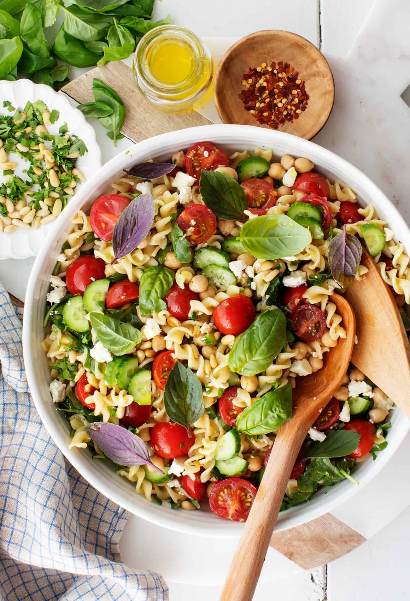

Easy Pasta Salad

Description
This fresh, easy pasta salad recipe comes together in under 30 minutes! Tossed in a tangy vinaigrette and filled with veggies, it's a cookout hit. beef sauce and smothered in a creamy white béchamel sauce in this classic Greek dish.
Ingredients
- Fusilli pasta
- Cherry tomatoes
- Cucumbers
- Chickpeas
- Arugula
- Arugula
- Pine nuts
- And fresh herbs
Steps
- Cook your pasta in a large pot of salted boiling water. Drain it, toss it with some olive oil, and set it aside to cool.
- Chop your cherry tomatoes and cucumbers, mince the parsley, and crumble the feta.
- browned, 8 to 10 minutesWhisk together the dressing ingredients..
- And toss everything together in a big bowl! Season to taste and dig in..